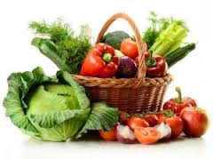

5 Alimentos que queman grasa abdominal rápidamente
Para cualquiera de nosotros, la grasa del vientre parece un hecho que estamos condenados a sufrir eternamente. Sin embargo, hay estudios recientes sobre la grasa abdominalque han revelado que el tejido adiposo en el vientre, es un mal muy habitual en cada vez más sociedades. Ciertos factores como el estrés y el sedentarismo han dado lugar a un aumento de la obesidad y una creciente preocupación por la pérdida de peso. Por otra parte, el descubrimiento de que la obesidad tiene graves consecuencias con nuestra salud, como la diabetes, se está cambiando el paradigma alimenticio en los últimos años.
Frutas saludables:
La Piña
Jugos naturales sin azucar
Es una forma de vida saludable, que cualquiera puede acceder, y lo menjor no necesitas ni dinero, ni esfuerzo, solo tener voluntad, animo !!

Carbohidratos

Proteinas

Verduras